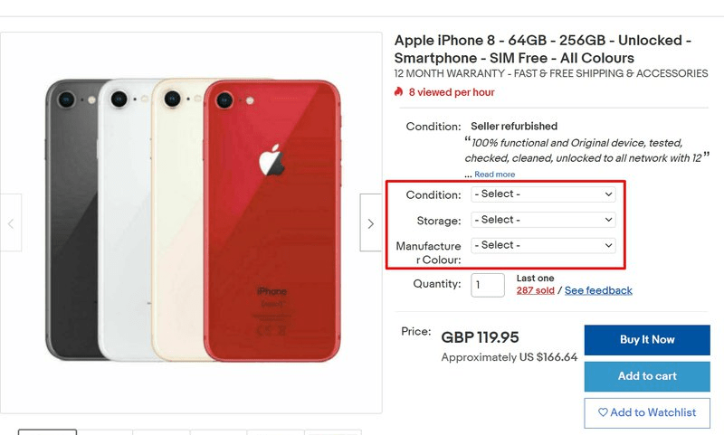
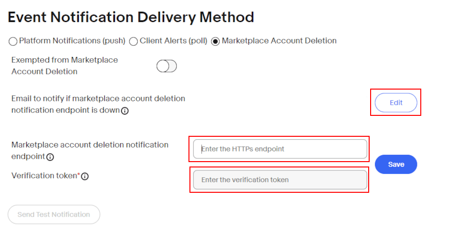
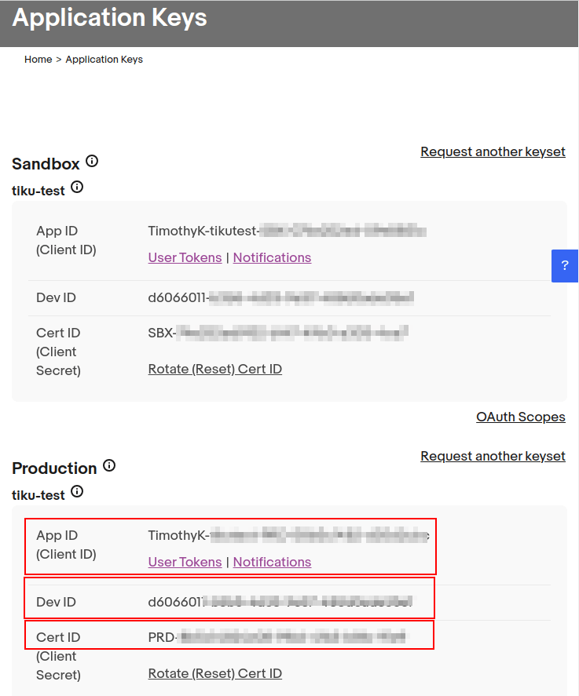

eBay connector setup¶
Overview¶
Odoo’s eBay connector allows eBay listings to connect with Odoo products. Once connected, updates to the listings can be made in Odoo or in eBay. When an item sells on eBay, draft sales orders are created in Odoo for the user to review and confirm. Once the sales order is confirmed, Odoo Inventory and Sales apps function standard to pull products out of inventory, and allow the user to create invoices.
See also
To learn more about the eBay connector visit these pages as well:
eBay - Odoo linked fields¶
The following are eBay product details. Each of these eBay fields update corresponding fields in Odoo.
eBay URL
eBay status
Quantity sold
Start date
Title
Subtitle
Item condition
Category
Category 2
Store category
Store category 2
Payment policy
Seller profiles
Postal code
Shipping policy
Listing type (fixed price or auction)
Starting price for Auction
Buy it now price
Fixed Price amount
Use stock quantity
Quantity on eBay
Duration
Allow best offer
Private listing
eBay description
eBay product image
Country
eBay terms¶
Variations group multiple products into one, with variation (or variant) options. Variations can sync to Odoo’s attributes and values. Variations will appear in drop down menus near the top of the page when viewing an eBay listing. These are comparable to product variants in Odoo.
Item specifics, located at the bottom of the listing, detail product-specific information. These specifics don’t sync with Odoo fields by default; a development is required to link these fields.

Sandbox and Production are terms that are used to categorize the eBay environments as either still in development/testing (Sandbox) or for use in the real instance of the database with real customer information/dataset (Production). It is recommended to start first in the Sandbox to test, and then following the processes below, create a Production instance.
Tip
eBay’s sandbox environment can be accessed by navigating to eBay’s sandbox portal at https://sandbox.ebay.com/. eBay’s production environment can
be accessed by navigating to eBay.com portal or
https://www.ebay.com/.
Important
The environment selection must remain the same for all environment settings on eBay and on Odoo throughout this setup.
eBay actions available on Odoo¶
The following are built-in actions in Odoo that add or update eBay listings:
List/ Link: generate a new eBay listing with an Odoo product by clicking List Item on eBay or Link With Existing eBay Listing.
Revise item button: after making changes to an eBay listing in Odoo, save the record, and then click the Revise Item in Odoo to update the eBay listing.
Relist: if an item’s listing was ended early or auto-relist was not selected, a user can relist the item from Odoo. The start date will reset.
End item’s listing button: end a listing on eBay directly from Odoo.
Unlink product listings: users can unlink a product from the eBay listing; the listing will stay intact on eBay.
Setup required on Odoo prior to eBay setup¶
To link eBay with Odoo, install the eBay module by navigating to the Odoo dashboard and clicking
into the Apps application. Search the term eBay and install the eBay Connector
module.
The following items must be configured before eBay is set up:
In Odoo, create and configure products that are intended to be listed in eBay. eBay does not import new products into Odoo. All products must first be created in Odoo, and then linked to listings.
Odoo does not allow multiple eBay listings to be linked per product in Odoo. If the company sells the same product for multiple listings, follow these instructions:
Set up one base product (noted in the Component field of the BoM) from which all eBay listings will pull from. This will be a storable product so stock can be kept. Highlighted in green below, this product will be included in the kit on each subsequent “linked” product below.
Set up 2+ linked products (noted in the Product field of the BoM, one for each eBay listing. The product type will be determined by the company’s accounting settings, as explained in the Odoo documentation. Highlighted in yellow below, each product should have a BoM type equal to Kit and have the base product as a Component of the kit. When this linked eBay product is sold, the delivery order created will have the base product listed in lieu of the linked product.

See also
eBay does not automatically create invoices for eBay orders that get pushed into Odoo. Set invoicing policy on eBay products: invoicing policy will dictate when the product can be invoiced. Since most eBay users collect payment before the product is shipped, “invoice on ordered” will allow users to mass create invoices for eBay orders every day.
Set the Outgoing Shipments route for the warehouse to Deliver goods directly (1 step).
Warning
When the Outgoing Shipments route is set to two or three steps, a known bug occurs: eBay wrongly marks orders as delivered when the pick operation in Odoo is confirmed. The expected behavior is to mark orders as delivered after the delivery order is confirmed. This mislabeling prevents tracking numbers in eBay from being imported onto the delivery order.
If the Accounting/Invoicing apps are installed, practice registering payment and reconciling invoices created from eBay orders with incoming eBay money.
See also
Generate a marketplace account deletion/closure notification token. To begin, navigate to . Under the eBay heading, change the mode to Production, and input random text values for the Production Cert Key. Then click the Generate Token button under the eBay Marketplace Account Deletion/Closure Notifications section. This token will be used during the setup on eBay for the deletion/closure notifications configuration.

Set up on eBay¶
Set up eBay developer account¶
To start, create an eBay developer account via eBay’s developer portal. This site requires a different login and password than the eBay account, though the same email address can be used to register. The verification to create a developer account is around 24 hours.
Set up eBay keyset¶
Once the eBay developer account is created, set up an application on eBay’s developer portal. Next, navigate to the Hi [username] heading at top right of screen, then from the drop-down menu options, click Application Keysets. Doing so opens a pop-up that prompts the user to Enter Application Title (up to fifty characters), and choose a development environment (Sandbox or Production). These two fields generate first keyset. This application title is not saved until the keyset is generated. Click on Create a keyset to generate the keyset.
Warning
The newly created production keyset is disabled by default. Activate it by subscribing to the eBay Marketplace ‘account deletion or closure notifications’ or by applying to eBay for an exemption. Once enabled, the database can make 5000 calls per day using this keyset.

Configure account deletion / notification settings (Production)¶
To configure notifications or delete the database on a production environment, navigate to the eBay
developer portal. Configure the account deletion/notification
settings in eBay by navigating to the Hi [username] at top right of screen, then
Application Keysets.
Next, click the marketplace deletion/account closure notification option under the Production keyset column. Enter an email under Email to notify if marketplace account deletion notification endpoint is down. Click Save to enable the email.
Following this action, enter the Marketplace account deletion notification endpoint URL provided by Odoo. This HTTPs endpoint is found in Odoo by navigating to , in the eBay Marketplace Account Deletion/Closure Notifications field.
Clicking the Generate Token button in Odoo below this field creates a verification token for the eBay production environment. In Odoo, Copy the newly created token and navigate to eBay to fill in the Verification token field. Click Save to enable the Event Notification Delivery Method.
After completing the above fields, click Send Test Notification to test the new notifications. Proceed to the next step when the green check mark appears. Revisit the above settings if the test post is not as expected.
After configuring notification settings, go back to the page to generate production keysets.
Creating the keyset¶
A successful setup of the notifications enables the ability to create Production Keysets which are needed in the remainder of the Odoo configuration. Navigate back to the page generate a production keyset.
The administrator is prompted to . Enter or confirm the account owner (the person legally responsible for the eBay API License Agreement). Fill out First Name, Last Name, Email, Phone. Then, select either the Individual or Business options.
Note
The provided email address or phone number does not have to match the account’s. eBay uses this information to contacting the business or individual in case of issues with user tokens. Additional contacts can be added from the Profile & Contacts page on eBay.
Click on Continue to Create Keys to confirm the primary contact. The Application Keys populates in a new screen and an email is also sent to the developer account. An App ID (Client ID), Dev ID, and Cert ID (Client Secret) all populate.
Copy these values down as they will be input into Odoo later in the process.
Create eBay user token¶
Now, create a user token in eBay by navigating to the Hi [username] at top right of screen,
then User Access Tokens.
Select the correct Environment: Sandbox for testing or Production for the live database. Maintain the same selection for all environment settings on both eBay and Odoo.
Next, select the radio button labeled Auth’n’Auth.
Choose Sign in to Production or Sign in to Sandbox to get a user token in the chosen environment. This button varies based on the selection made above for either Sandbox or Production.
Doing so triggers a a pop-up window to Confirm your Legal Address. Complete the required fields, which are First Name, Last Name, Primary Email, Legal Address, and Account Type. For Account Type, select either Individual or Business. To complete the confirmation, click Sign into eBay to get a Token.
Note
eBay will contact this individual or business should there be any issues with the application keys. Other contacts can be added on the eBay page.
The administrator will be redirected to either a sandbox or production sign-in page for eBay. This login is different than the eBay developer’s console, it is the eBay account where the items will be sold on. This email and/or login can differ from the eBay developer account.
Enter the Email or Username for the eBay account and sign into the eBay account.
Important
Should an additional user be needed for the sandbox simulation, a test user needs to be created. Visit eBay’s Register for Sandbox form. Detailed instructions can be found on eBay’s help pages: Create a test Sandbox user.
Grant application access¶
After signing into the production or sandbox environment, eBay presents the administrator with an agreement to grant access to the user’s eBay data.
Clicking Agree allows eBay to link the eBay account with the application programming interface (API). This agreement can be changed at any time by visiting eBay’s account preferences.
Warning
eBay has a timed sequence between signing in and agreeing to the terms for the API linkage to the account. Once complete a User Token will populate on the page.
A User Token will populate on the screen. Make sure to copy this token down as it will be used in the next steps along with the Application Keyset.

Important
Signing in to the eBay account is necessary to create to the token. The eBay developer can also revoke the token by clicking on the Revoke a Token link.
API explorer¶
Now that the Application Keyset and User Token have been created, a test can be executed via the API Explorer to ensure that the API is configured correctly. This test will execute a simple search using the API.
To begin the API test, click on Get OAuth Application Token. This will populate the key into the Token field.
A basic search function is set to execute. Click on Execute to complete the test. A
successful test will respond with a Call Response of 200 OK with a corresponding
Time.
Entering credentials into Odoo¶
The previously copied User Token and Application Keyset are now ready to be entered into the Odoo database.
Navigate back the eBay settings in Odoo () and paste the following credentials from eBay into the corresponding fields in Odoo.
Platform |
Dev Key/ID |
Token |
App Key/ID |
Cert Key/ID |
|---|---|---|---|---|
eBay |
Dev ID |
User Token |
App ID (Client ID) |
Cert ID (Client Secret) |
Odoo |
Developer Key |
Production/Sandbox Token |
Production/Sandbox App Key |
Production/Sandbox Cert Key |
Important
The Application Keyset can be accessed by going to eBay’s developer portal and navigate to the Hi [username] at top right of screen,
then click on Application Keysets. Get to the User Token in eBay by navigating to
the Hi [username] at top right of screen, then User Access Tokens and click on
Sign in to Sandbox. The User Token can also be accessed by clicking on
User Tokens from the page.
Confirm that the setup is correct by saving the credentials in Odoo. Once the initial setup is
complete, a new menu tab in products will appear called eBay with the option to Sell on
eBay. See the How to list a product? documentation on how to list products.
Tip
Sync product categories by clicking Product Categories. After syncing, a new menu
item, eBay Category, appears available for products to be configured with. These eBay
categories are imported from the Odoo database and are available when listing an item on eBay
through Odoo.
Important
If Product Categories beyond four paths are required, users will need to manually add those paths. This has historically been done by getting a list of all product categories beyond four paths, manually importing them into the Product Category model in Odoo, and then linking them individually to the product.